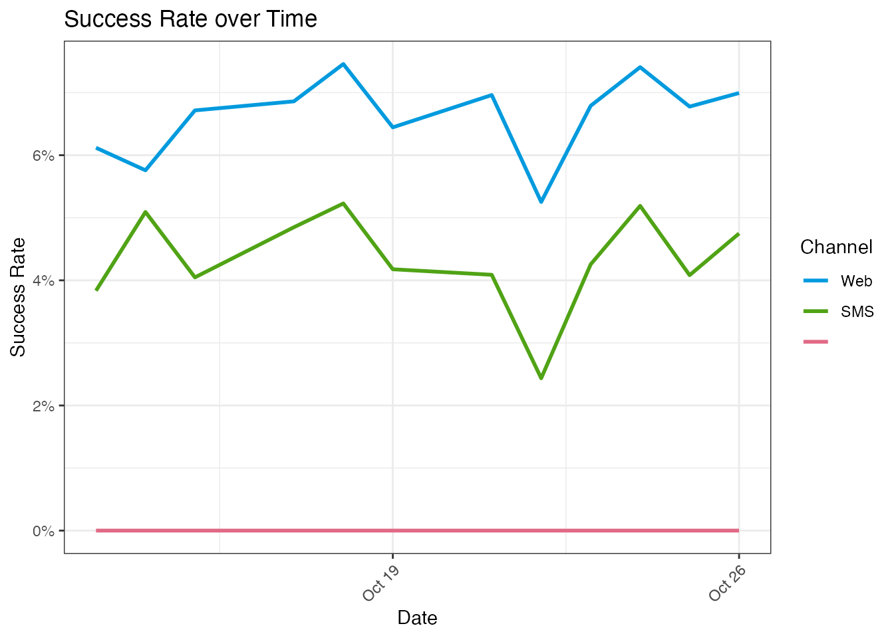

adhoc-datasetanalysis
Pega
2023-09-22
adhoc-datasetanalysis.RmdAd-Hoc Data Analysis using Dataset Exports
When testing and debugging DSM projects involving data flows, it
often is very handy to inspect datasets. There are a couple of
out-of-the-box datasets, like pxInteractionHistory that
represents the data stored in IH, or pxDecisionResults that
contains the model data and the results of strategies. You can also have
custom datasets created perhaps as the results of running dataflows or
when generating data with MonteCarlo datasets.
Any of the datasets that supports the browse operation
(basically, any that can be read from), can also be exported. The export
format used is multi-line JSON, i.e. every record from the dataset is
exported as a single line containing the JSON data.
Once you have exported a dataset from Pega, you can easily import it and explore it.
In this example we take a look at a sample of
pxInteractionHistory but this really works for any
dataset.
In Pega, export the dataset and download it to your local filesystem.
library(pdstools)
# include below when developing the library
# sapply(list.files("~/Documents/pega/cdh-datascientist-tools/r/R", "*.R", full.names = T), source)
ihdata <- readDSExport("Data-pxStrategyResult_pxInteractionHistory", "~/Downloads") The pdstools package ships with a small sample of IH
data
| pySubjectType | pxInteractionID | ControlGroupValidityStart | pyStage | pyJourney | CustomerID | ChannelSubGroup | pyChannel | pyCustomerSubSegment | pyStep | pySubjectID | pyTreatment | pyDirection | pyGroup | pyPropensity | BundleName | pyOutcome | pyReason | pyApplicationVersion | pyComponent | DeviceType | MktType | pyOperator | pxRank | pyPartitionKey | pyIssue | BundleHead | ModelControlGroup | pyDivision | pxFactID | pxOutcomeTime | MktValue | pyBehaviour | WorkID | URI | pyApplication | pyCustomerSegment | pyInteraction | pyName | UserAgent | pyOrganization | pyUnit | pyResponse | pyCategory | ControlGroupValidityEnd | pxDecisionTime | pyLabel | ChannelGroup | pyStrategy |
|---|---|---|---|---|---|---|---|---|---|---|---|---|---|---|---|---|---|---|---|---|---|---|---|---|---|---|---|---|---|---|---|---|---|---|---|---|---|---|---|---|---|---|---|---|---|---|---|---|
| CDHSample-Data-Customer | -3586780626931683381 | Customer-4118 | SMS | Customer-4118 | Credit_ExternalSMSTreatment | Outbound | CreditCards | 0.05 | ARM31MCWB | NoResponse | 01.01.01 | Rank results | CDHSampleAdmin | 8 | 27 | Sales | FALSE | Test | CDHOrgDiv | -3586780626931682154 | 20201013T171442.255 GMT | CDHSample | InitializeModelsSmall | MasterCardWorld | CDHOrg | CDHOrgUnit | 20201012T121949.092 GMT | MasterCard World | InitializeModelsSmall | |||||||||||||||||||
| CDHSample-Data-Customer | -3586780626931683381 | Customer-4118 | SMS | Customer-4118 | Outbound | CreditCards | 0.05 | Rejected | 01.01.01 | Rank results | CDHSampleAdmin | 12 | 27 | Sales | FALSE | Test | CDHOrgDiv | -3586780626931682150 | 20201013T171442.255 GMT | CDHSample | InitializeModelsSmall | UPlusFinPersonal | CDHOrg | CDHOrgUnit | 20201012T121949.092 GMT | U+ Financial Personal | InitializeModelsSmall | |||||||||||||||||||||
| CDHSample-Data-Customer | -3586780626931683381 | Customer-4118 | SMS | Customer-4118 | Outbound | CreditCards | 0.05 | Rejected | 01.01.01 | Rank results | CDHSampleAdmin | 13 | 27 | Sales | FALSE | Test | CDHOrgDiv | -3586780626931682149 | 20201013T171442.255 GMT | CDHSample | InitializeModelsSmall | UPlusFinGold | CDHOrg | CDHOrgUnit | 20201012T121949.092 GMT | U+ Financial Gold | InitializeModelsSmall | |||||||||||||||||||||
| CDHSample-Data-Customer | -3586780626931683381 | Customer-4118 | Customer-4118 | 0.05 | Churned | 01.01.01 | Rank results | CDHSampleAdmin | 14 | 27 | FALSE | CDHOrgDiv | -3586780626931682148 | 20201013T171442.255 GMT | CDHSample | InitializeModelsSmall | CDHOrg | CDHOrgUnit | 20201012T121949.092 GMT | InitializeModelsSmall | ||||||||||||||||||||||||||||
| CDHSample-Data-Customer | -3586780626931683342 | Customer-4239 | SMS | Customer-4239 | Credit_ExternalSMSTreatment | Outbound | CreditCards | 0.00 | NoResponse | 01.01.01 | Rank results | CDHSampleAdmin | 1 | 228 | Sales | FALSE | Test | CDHOrgDiv | -3586780626931682147 | 20201013T171442.255 GMT | CDHSample | InitializeModelsSmall | UPlusPersonal | CDHOrg | CDHOrgUnit | 20201012T143558.997 GMT | U+ Personal Card | InitializeModelsSmall |
Some of the columns in your dataset may represent date or date-time values. Pega will export these as strings in the standard Pega format. For analysis it will be convenient to convert them to proper date/time objects so we can easily report and plot.
for (f in c("pxOutcomeTime", "pxDecisionTime")) {
ihsampledata[[f]] <- pdstools::fromPRPCDateTime(ihsampledata[[f]])
}
summary(ihsampledata[,grepl("Time",names(ihsampledata)), with=F])
#> pxOutcomeTime pxDecisionTime
#> Min. :2020-10-13 17:14:42.25 Min. :2020-10-12 12:19:49.08
#> 1st Qu.:2020-10-17 19:10:18.05 1st Qu.:2020-10-15 22:14:24.24
#> Median :2020-10-19 23:07:45.09 Median :2020-10-19 18:05:37.41
#> Mean :2020-10-20 08:20:46.19 Mean :2020-10-19 12:20:47.76
#> 3rd Qu.:2020-10-23 05:01:59.50 3rd Qu.:2020-10-22 23:15:22.44
#> Max. :2020-10-26 12:19:49.08 Max. :2020-10-26 11:41:57.95With the data in place, you can now do the analyses you want. For the IH data we can for example plot accept rate over time.
BTW, if you’re not familiar with the data.table syntax
below, it would be a good idea to look into this. The internals of
pdstools heavily rely on it also.
ihsampledata[, period := lubridate::as_date(pxOutcomeTime)]
ihsampledata[, successRate := sum(pyOutcome=="Accepted")/.N, by=c("period","pyChannel")]
ggplot(ihsampledata, aes(period, successRate, color=pyChannel)) +
geom_line(size=1) +
# geom_col(position=position_dodge()) +
scale_color_discrete_qualitative(name="Channel", guide = guide_legend(reverse = TRUE)) +
scale_y_continuous(limits = c(0, NA), name = "Success Rate", labels = scales::percent) +
labs(title = "Success Rate over Time", x="Date")+
theme_bw()+
theme(axis.text.x=element_text(angle=45, hjust=1))
But you can of course also use a different plot style, for example
from the tidyverse universe:
library(tidyverse)
ggplot(group_by(ihsampledata, pyName, pyChannel, pyIssue) %>%
rename(`Channel`=pyChannel) %>%
summarise(count = n()) %>%
mutate(pct = count/nrow(ihsampledata)),
aes(pyName, pct, fill=`Channel`)) + geom_bar(stat="identity") +
coord_flip()+ scale_y_continuous(labels = scales::percent)+
labs(title = "Proposition Distribution", x="Proposition", y="Percentage of Total Offered")